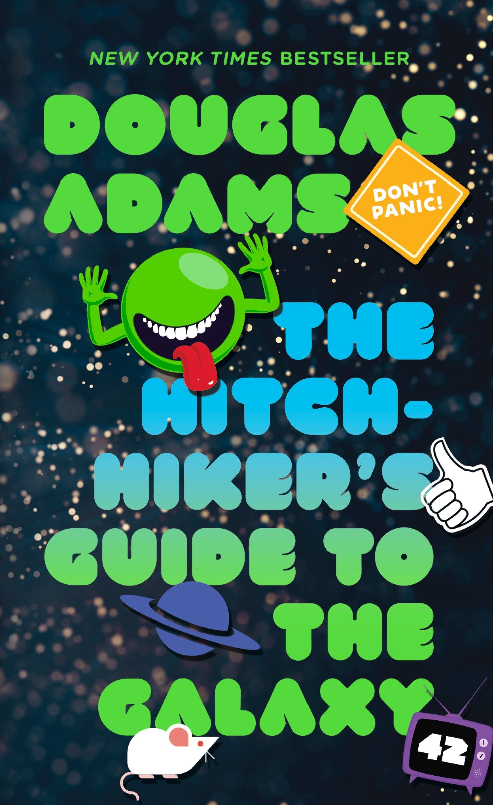

 <---- clickable
<---- clickable
The author of this book is Douglas Adams, he was born on the 11th of march 1952 in Cambridge England.
Douglas Adams was 26 years old when he wrote the first book in the series The hitchhikers guide to the galaxy that consists of 5 books.
Adam also wrote multiple other books and wrote three stories for the television series Doctor Who.
The book starts when one of the main characters Arthur Dent is having a bad day.
There are multiple bulldozers outside of his house waiting to break it down to make space for a freeway bypass.
To protest again the breaking of his house he argues with the workers and lays down in front of the bulldozers.
When Arthur his friend Ford Prefect shows up whom Arthur has always believed to be a non human person Ford tells Arthur that he has something really important to tell him and that they have to go to the pub now,
He soon learns that the world is about to end by an alien species called Vogons because they need space for their new hyperspatial express route.
Ford and Arthur can just barely escape and this is where their story in the galaxy starts
I chose the novel The hitchhiker's guide to the galaxy by Douglas Adams because it looked like an interesting book and Simon recommended it to me.
It was a fun but hard book to read and i sometimes couldn’t follow what the story was about.
The book was hard to read sometimes because the story used a lot of difficult words and sentences.
I also liked the story because it had a lot of humor included with it and weird scenarios that you would’ve never thought would happen in a book like this.
For example, two programmers in the book made a supernatural computer with the purpose to calculate the answer the Ultimate Question of Life, the Universe, and Everything after they let the robot work for 7,5 million years the robot gave an answer “42” but didn’t know the question to 42 itself.
The parts that made the book hard to read was when they introduced new sections and they had to explain what’s happening and with what new kind of alien species they were talking.
Overall this book was really fun to read but kind of hard to get into.
I give this book a 7/10.
"42"
"Don't panic"
"The ships hung in the sky in much the same way that bricks don't."